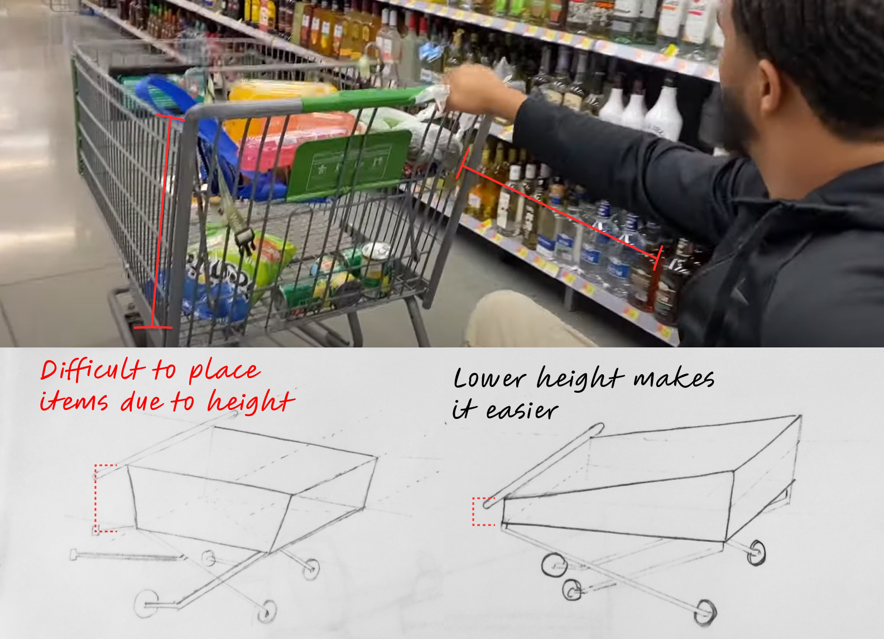
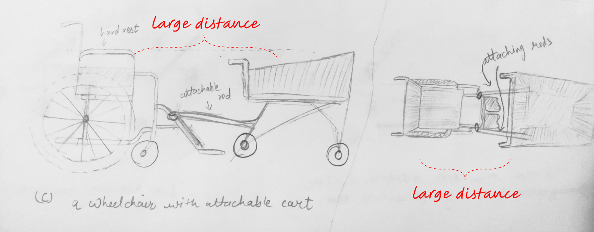

Personal belief
I believe that disability is not a single person's issue, but it is everyone's problem.
People with disability make up a large portion of the U.S. population - Around 27% people in USA have some kind of disability,
12.1% (4,03,27,794) people have serious mobility issues and 7.1% of these people have difficulty living independently.
While there are millions of products designed to help people in wheelchair to physically live a more
convenient life, we want them to find fulfillment while shopping groceries from the store, providing them the feeling of inclusivity and independence.
Initial problem statement
How might we enhance the in-store experience of people in wheelchair?
Primary research
How traditional observations shaped our understanding of the problems faced by people in wheelchair?
The first step in primary research was the traditional observations at
different-scale grocery stores like Kroger, Fresh Thyme, Aldi and Target.
We observed people with temporary and permanent mobility issues to understand their shopping experience.
You can view observation protocol and insights here
Photos clicked during traditional observations
What key problems did we find through clustering obervations?
We used affinity diagramming to meaningfully cluster observations
and insights from the traditional observations we did at the stores
Key categories
From the observations, we were able to narrow it down to these
key problems which needed to be addressed

Secondary research
Conducted desk research to collect insights that deepened our understanding of the problem space
Digital ethnography assisted us in 2 ways, it helped us confirm the problems that we observed were really the pain points of people in wheelchair
and secondly, it helped us explore problems which we were not able to .
Frustrations we found through digital ethnography

Need of the people in wheelchair
Need 1
Bruce, a 28 years old with cerebral Palsy needs to shop groceries on
his wheelchair and not on the motorized cart because he does not want to leave his
custom-made expensive wheelchair to be left somewhere in the store.
Need 2
Alexa, a 32 years old with knee injury needs to place bucket on her lap for shopping
because it is difficult for her to handle the cart and wheelchair at the same time.
Need 3
Ben, a 56 years old with multiple sclerosis needs to push the cart hard
because there are a lot of items in the cart and it is difficult to move the wheelchair and cart simultaneously.
Iterative sketching
Mistakes made and corrected through iterative sketches
Sketching was a key element in our design process to examine, explore & explain our thoughts and ideas regarding the attachable cart
Exploration 1:
Attachable rods on normal cart

Fig: Different angeled traditional cart with an attachable rod (left) and where it would be fixed (right)
Mistakes in exploration 1?
The height of traditional cart near the push handle is higher than the other side,
however, this becomes difficult when people in wheelchair to place items in the cart
while seating in the wheelchair.
Exploration 2:
Lower height near push handle

Fig: Traditional cart (left), Lower height at push handle (right)
Findings against exploration 2
The attachable rods are placed in such a way that the diatance between cart and person
is way larger which causes them inconvenience when placing the item in the cart (as shown in sketch below).

Exploration 3:
Slideable till lap

Fig: Cart which is slidable till the lap
The need for exploration 4
Through digital ethnography we found that people in wheelchair got conscious
when they felt they were holding the line because they processed slowly than others.
Hence we came with the idea of smart, queueless, convenient attachable cart
Exploration 4:
Queueless checkout
Fig: Ideation for a smart cart
An upgrade to exploration 4
Even though the cart slides till the lap and has smart checkout features,
pushing it becomes harder if it got heavier with items.
People would need to push the wheelchair plus the weighted cart.
So it would need something like a power assist.
Exploration 5:
Power assist
Fig: Power assist on attachable cart
Testing our concept
A visit to Indiana institute on disability and community
We asked people there if they would connect us with someone who would be eager to volunteer in testing out our concept.

Fig: Visit to Indiana Institue on Disability and Community with Pranit and Harper
Mother of 28-year-old of with Cerebral Palsy reached out to volunteer for testing our concept

Fig: Email snapshot from a mother of 28-year-old with Cerebral Palsy
Fig: Explaining our concept to her and noting her feedbacks
Her painpoints for shopping with a child with Cerebral Palsy + Feedbacks for our concept

Personal reflection
Even though we were only able scratch the surface of this problem,
solving issues of people in wheelchair gave me complete satisfaction with the work I am doing
to make the experience of grocery shopping more accessible and inclusive. There is much more
room for future scope of this project.